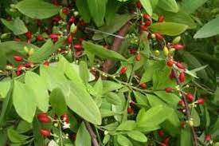
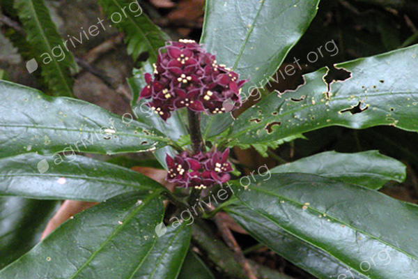

1. Đặc điểm hình thái
Cây bụi hoặc gỗ nhỏ, phân nhánh lưỡng phân. Cành non lúc đầu có lông thưa. Lá mọc đối hay sát gần nhau ở đỉnh cành; phiến lá hình bầu dục hay mũi mác, cỡ 15 - 16 x 4 - 7 cm, phía gốc hẹp dần thành hình nêm, chóp lá thành mũi nhọn dài; mép có răng cưa to và thưa, ở đỉnh hay ở 2/3 mép phía trên có răng rất nhọn; gân bên 6 - 7 đôi. Cụm hoa chuỳ ở đỉnh cành, có lông. Hoa đơn tính khác gốc, mẫu 4. Cụm hoa đực nhiều hoa, cuống hoa dài 5 mm, không có lá bắc; cánh hoa hình bầu dục, đỉnh có mũi nhọn dài và cong. Nhị 4, xen kẽ với cánh hoa; bao phấn hình bầu dục; có đĩa hình 4 cạnh. Cụm hoa cái ít hoa; cuống hoa dài 3 mm, có đốt, có 2 lá bắc nhỏ. Bầu hạ. Quả mọng, hình bầu dục, dài 1 - 1,5 cm, chứa 1 hạt.


2. Phân bố
Lạng Sơn (Mẫu Sơn).